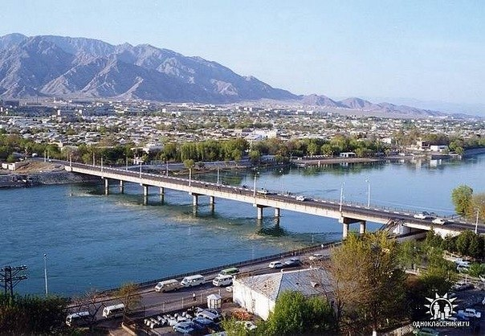
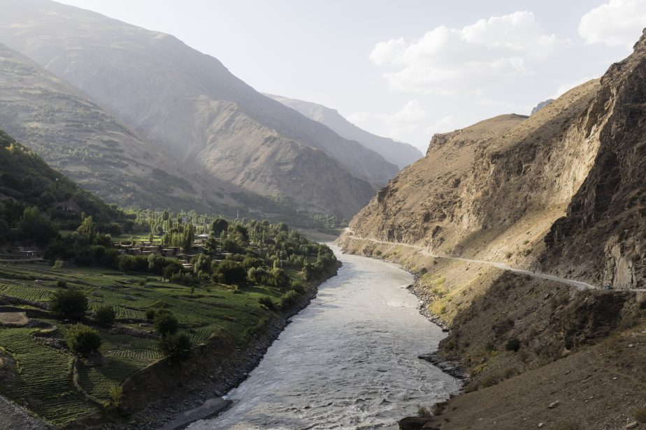
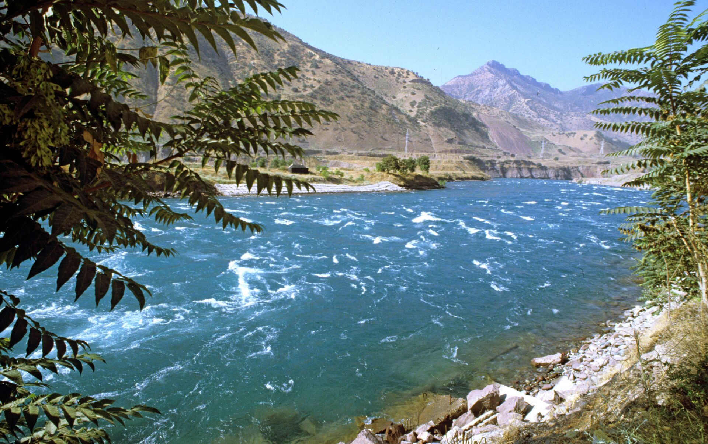

Реки Таджикистана
Речная сеть республики делится на три системы Алайско-Туркестанской горной цепью и Гиссарским
хребтом: на
севере — Сырдарьинская, в центре — Зеравшанская и Амударьинская — на юге. На Восточном Памире
имеются
бессточные котловины с озерами Шоркуль и Каракуль, а также рекой Маркансу, уходящей в Китай и
являющейся
притоком реки Кызылсу.
Часть площади страны (9,2 %) располагается севернее Туркестанского хребта в бассейне Сырдарьи, а
территория,
находящаяся к югу от хребта — в бассейне Амударьи. Вдоль южной границы Таджикистана протекает река
Пяндж,
являющаяся верховьем Амударьи. Начало берет из памирского озера Зоркуль и до впадения с афганской
стороны
левого притока Вахандарьи именуется Памир. С востока на запад с правой стороны в реку Пяндж впадают
реки
Гунт с притоком Шахдара, Бартанг с притоком Гудара, Язгулем, Ванч, Кызылсу с притоком Яхсу, Вахш с
притоком
Обихингоу.
Ниже по течению в месте слияния Вахша с Пянджем река получает название Амударья, в которую впадает
река
Кафирниган. Верховья Амударьи и Зеравшана территориально относятся к Таджикистану, а также
незначительная
средняя часть Сырдарьи и притоки этих трёх рек. В пределах республики воды крупных многоводных рек
частично
используются для орошения плодородных земель.
Так как 93 % территории страны занимают горы, большинство рек отличаются очень крутым падением,
достигающим
нескольких метров на километр, а в некоторых местах оно составляет десятки и даже сотни метров на
километр. На Восточном Памире они стекают с высот 5000-4000 м на равнины, расположенные на
отметках
3000-3500 м — до 1200—1500 м, в северной, центральной и южной частях Таджикистана — с 2000-3000 м —
до
300—150 м. Благодаря многоводности рек и крутым падениям Таджикистан обладает колоссальными запасами
водной
энергии, составляющими около половины запасов гидроэнергии всей Средней Азии. Твердость горных пород
благоприятствует созданию водохранилищ и гидроэлектростанций.
В Таджикистане реки имеют четыре типа питания: ледниково-снеговое, снегово-ледниковое,
снегово-дождевое
и
снеговое. Реки ледниково-снегового питания берут начало высоко в горах, где непрерывно накапливаются
ледники
и снега. На Памиро-Дарвазской возвышенности, покрытой ледниками, находятся истоки главных притоков
Амударьи
— Вахша и Пянджа, а из ледников и снежников центрального горного массива вытекают Зеравшан и
некоторые
левые
притоки Сырдарьи.

Наибольший сток на реках снегово-ледникового питания приходится на май и июнь месяцы. К этому типу относятся
реки Кафирниган, Варзоб, Ханака, Каратагдарья, Шеркент и Сангикар.

Наибольший сток на реках снегово-дождевого питания имеют в марте-мае. Паводки здесь носят селевой
характер.
К этому типу рек относятся Кызылсу, Яхсу.
Наибольший сток на реках снегового питания приходится на апрель и май. К этому типу рек относятся
малые
притоки в среднем и нижнем течении Варзоба, Кафирнигана, Иляка, Лучоба. Представителем этого типа
питания
является река Гурке — правый приток Варзоба.
Кроме рек, описаных по типу питания, в стране имеются небольшие речки, образованные родниками. В
некоторых
районах — у подножий Кураминского и Туркестанского хребтов, в горах между Гиссарской и Вахшской
долинами, в
долинах рек Яхсу, Кызылсу и Бешкентской, — водами родниковых речек орошаются сотни гектаров посевов.
Наибольший сток воды приходится на период преимущественного таяния снегов и ледников — июль и
август. К
этому типу относятся реки Вахш, Обихингоу, Гунт, Шахдара, Бартанг, Язгулем, Ванч, Зеравшан,
Фандарья, Ягноб,
Искандердарья, Кштут, Могиендарья, Исфара и Сырдарья.
Наибольший сток на реках снегово-ледникового питания приходится на май и июнь месяцы. К этому типу относятся
реки Кафирниган, Варзоб, Ханака, Каратагдарья, Шеркент и Сангикар.
Берёт начало на Памире при слиянии рек Кызылсу и Муксу на высоте 1834 м над уровнем моря. Большая
часть бассейна расположена в пределах Памиро-Алайской горной системы. В верховье называется Сурхоб и
течёт на запад; приняв слева реку Обихингоу, получает название Вахш и поворачивает на юго-запад.
Вахш течёт преимущественно в узкой долине, местами превращающейся в глубокое ущелье; в 170 км от
устья выходит в Вахшскую долину, где разбивается на рукава, вода которых используется для орошения и
водоснабжения.
Питание преимущественно ледниково-снеговое, в меньшей степени дождевое. Половодье наблюдается в
период интенсивного таяния ледников: с мая по сентябрь, межень в ноябре — апреле. Средний расход в
среднем течении 660 м³/с, наибольший (в июле) — 3120 м³/с, наименьший (в феврале) — 130 м³/с. Воды
Вахша, как и других среднеазиатских рек, отличались большой мутностью (4,16 кг/м³), но после
постройки Нурекской ГЭС стали прозрачными, голубого цвета.
В бассейне Вахша насчитывается 569 горных озёр общей площадью 1737 км², в основном они расположены
на высотах 2800—3500 м.

Наибольший сток на реках снегово-ледникового питания приходится на май и июнь месяцы. К этому типу относятся
реки Кафирниган, Варзоб, Ханака, Каратагдарья, Шеркент и Сангикар.